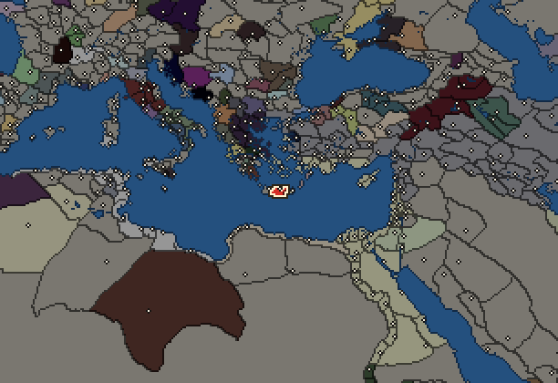
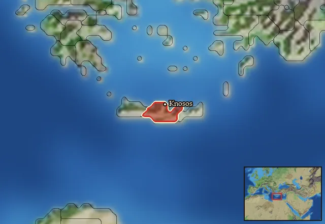

RTR: Imperium Surrectum
RTR: Imperium SurrectumKnossos


- difficulty Very Difficult
- Greek culture
- believes
 Dorian
Dorian - 1 settlement
- capital Knosos
- 6,000 manpower
- 3 characters
- 17 faction units
- 433 regional units
The campaign brief
What do people think of when they hear the word Crete? If they do not think of our famous and skilled Cretan archers, it must be Minos. Our legendary king once ruled all of Crete and the tales of the legendary Minotaur himself are known to almost every man. Minos had a fleet so vast that it dominated the Aegean islands and made Athens pay tribute to him. Glorious days for our Crete! We are blessed to have the ruins of the massive palace of Knossos in our city – a palace so vast and complex that it brings admiration to all of us. Some even say that Daidalos built the labyrinth underneath this place. We don't want to rebuild this palace, not because it requires large funds, labour, or even knowledge from the gods that is lost to us, but mostly because we do not want to anger the gods or any ancestor spirits that might lie there… Therefore, we want to preserve this holy place to remind us of our days of glory and our history. Since we respect the gods and our heritage, people keep coming to our island.
We used to fight each other for control of Crete and remained neutral in massive wars like the legendary one between Sparta and Athens. But, at the same time, some Cretans invited foreign powers onto our soil in order to try and dominate their neighbours. Our fleets, as swift and fast as they are, are just a fragment of what they once used to be. The island has been ravaged by conflict. Lyttos and Gortyn keep appealing to Sparta for help, and Kydonia cannot be trusted. The Macedonians are a threat to everyone, and the troops of king Ptolemy are invading our country from the east…
But maybe we can find our own friends in Greece! The Aitolians seem like an upstart power that would be ready to fight anyone, and they promise much. That we need to fight is clear. Crete should be united under the rule of one king. A Cretan king, a new Minos, should arise, who will build a fleet so massive that it will encircle Crete with wooden walls of proud, Cretan ships! As our philosopher Epimenedes said:
"Give Cretans a bow and they will conquer the world."
I intend to unify all Cretans and provide them with bows, so that they may rain a hail of well-aimed arrows on the skulls of our enemies!
Starting diplomacy
Allied with (1):  Antigonid Kingdom
Antigonid Kingdom
Trade agreements with (1):  Antigonid Kingdom
Antigonid Kingdom
At peace with every other faction.
Like every faction, it is also at war with the  Free Peoples, who hold every settlement no faction does.
Free Peoples, who hold every settlement no faction does.
Starting settlements
Knossos begins with 1 settlement and 6,000 manpower.
What is already built in each settlement
Knosos, in Minoa: Small Treasury, Governor's Villa, Wooden Palisade, Homeland, Region Information Scroll, Roads, Local Barter, Olive Grove (Rural), Trade Port, Irrigation Ditches (Crops), Basic Armoury, Cisterns (Sanitation)
Homeland
Knossos's homeland is 1 region. Only there can it install the Homeland government (more on homelands).

Starting characters
| Name | Role | Age | Name | Role | Age | Name | Role | Age | |||
|---|---|---|---|---|---|---|---|---|---|---|---|
| Hermaiskos | General | 38 | Zenostratos | General | 16 | Hygesiteles | Admiral | 30 |
Reforms
For every faction: Military innovations have arrived!, Second wave of military innovations have arrived!.
Faction mechanics
From the game's own guide. See also the other game guides.
Special Mechanics
Knossos has a mercenary centre in the capital, check its Region Information Building for more details.
Military reforms
Knossos has one reform.
Knossos reforms requirements: Have at least 1 large city in Crete
Unlocks: Knossian General (Late), Knossian Hippeis (Late) and Knossian Aspidophoroi
Units you can recruit
The same as in the main campaign.